西电2025年研究生网课人工智能安全与伦理（北航雨课堂）
答案参考于https://github.com/LazzyXP/AI-Security-and-Ethics-BeiHang-Univer...，修改了一部分错误的答案
第一章-AI安全与伦理概述
- AI 解释生成系统的手段包括：注意力网络、解耦表征、生成解释
- 面向数据隐私的攻击方式有：成员推断攻击 和 模型反演攻击
- 根据触发器的可见性区分,数据投毒可以分为 可见触发器 和 不可见触发器
- AI处理可解释性的手段包括：线性代理模型、决策树、自动规则提取、显著图
- 预处理的公平ai算法包括：平衡数据集、审查调整数据集、合成公平数据集、合成成对数据进行数据增强
- 面向模型隐私的攻击方式有：模型窃取攻击
- 保护数据隐私要求:攻击者不能从模型的输出推测出 输入数据、训练数据集 等敏感信息
- 根据触发器是否可优化区分,数据投毒可以分为 设定触发器 和 可学习触发器
- 根据触发器是否包含语义信息区分,数据投毒可以分为语义触发器 和 非语义触发器
- 按应用阶段来分,对抗防御可以分为 预处理、处理中 和 后处理 三类
- 后处理的公平ai算法包括：修改敏感属性
- 处理中的公平ai算法包括：增加公平性限制项、对抗训练、领域独立训练
- 在模型的部署过程中,按照 预处理、处理中 和 后处理 三个方面,来实现公平AI算法
- 保护模型隐私要求:模型的 参数、结构、功能 不被攻击者 掌握、获取
- 从攻击对象不同角度,AI隐私主要存在于两方面,一种是 数据隐私,另一种为 模型隐私
- AI安全对 个人安全、社会安全、国家安全 三方面造成威胁
- 由人工智能技术的发展带来的安全相关问题,包括 人工智能助力安全、人工智能内生安全 与 人工智能衍生安全 三部分
- 按应用场景来分,对抗攻击可以分为 数字攻击 和 物理攻击 两类
第二章-对抗攻击方法
- MI-FGSM在I-FGSM的基础上引入了 动量（Momentum） 修正原本的梯度方向
- ViewFool优化目标的第二项是 熵正则损失 ,具体是指：分布熵，保持对抗视角分布始终在一个较大的范围，这是为了保证优化到的结果是一个较大的对抗视角区域，在该区域下具有抗相机波动能力
- 基于决策的攻击（Decision-based Attack）只依赖模型输出的分类结果 预测的标签),同样属于黑盒攻击方法
- 根据一阶梯度和二阶梯度,ZOO使用 拟牛顿优化 方法执行梯度下降操作优化对抗样本
- ZOO使用了 对称差商 估计f(x)的一阶梯度
- Boundary Attack的扰动需要满足三个条件,分别是 施加该扰动的对抗样本要在值域内、扰动要和距离成相对关系、扰动需要减少对抗样本和原始样本的距离
- 针对有目标攻击,Boundary Attack直接使用 攻击目标 的图像
- 针对无目标攻击,Boundary Attack根据 最大熵分布 采样一个正态分布噪声的图像
- Boundary Attack从一个已经是 对抗样本 的点开始初始化,在优化过程中沿着对抗性和非对抗性区域之间的边界执行随机游走,逐渐收敛到和到目标图像的距离降低的那个对抗样本点
- 基于决策的攻击方法有: BoundaryAttack
- Boundary Attack设计了 正交扰动 策略,动态调整参数
- Boundary Attack主要调整的超参数是 扰动总长度（δ）和 到原图距离的步长 （ϵ）
- PR2设计了一种针对 物理世界中交通牌识别 的对抗补丁,并能够抵抗物理世界中对视角相机的 距离 和 角度变化
- 考虑到物理世界中的各种细微扰动,如旋转平移以及补丁放置的误差,可能影响对抗补丁的效果,Adversarial Patch在优化阶段使用了 EOT 技术来增强补丁的攻击鲁棒性
- 在获得优化位置后,Adversarial sticker根据面部的3D建模对贴纸进行 3D变换 以获得更自然的对抗样本
- Adversarial sticker设计了一种 基于区域的差分进化 算法优化对抗性贴纸的位置
- 一般的对抗补丁方法旨在优化Patch纹理以实现其对抗性,并固定掩膜 与之相反,Adversarial sticker使用常见的贴纸固定补丁纹理,并优化掩膜（即贴纸的粘贴位置）为了证明位置信息足够产生对抗性。通过实验探究,Adversarial sticker证明了1 依靠位置能够实现攻击；2 对抗性位置存在区域聚集性
- Adversarial sticker成功在哪些任务上实现了性能良好的攻击? 人脸识别、交通标识牌识别、图像检索等
- Adversarial sticker是一类 针对位置优化 的对抗补丁,它使用日常生活中常见的贴纸作为补丁纹理,仅依靠粘贴位置的优化进行攻击
- 针对3D人脸识别的光照攻击引入 3D不变损失 提升物理变换下攻击的鲁棒性
- 基于分数的攻击（Score-based Attack）只依赖于模型的 预测分数（如类别概率或对数）,属于黑盒攻击方法的一类
- 为降低制造误差,PR2技术使用的贴纸是 最简单的黑白色贴纸 ,来制造较大的视觉误差,以实现更有效的物理攻击
- ViewFool将物体的视角表示为一组6维向量,由 布莱恩约定的z-y-X轴欧拉旋转角 和 三个轴向的偏移量 组成,这组参数能够通过输入NeRF获得物体在该视角参数下的渲染图像
- ViewFool设计了一种 系统性生成对抗性视角图像 的攻击方法,它基于 NeRF 对物体进行三维表示,使其具备对物理世界的物体生成对抗性视角渲染的能力,并提出 ImageNet-V 数据集,用于 视觉模型的视角 鲁棒性评估
- 针对3D人脸识别的光照攻击在模型训练中利用了 渲染器 渲染光照下3D人脸的调制条纹图像
- 针对3D人脸识别的光照攻击在试验阶段,针对 基于点云的模型 和 基于深度图的人脸识别模型 展开实验
- 针对3D人脸识别的光照攻击的攻击目标是: 结构光三维扫描仪 通过 投影仪 将对抗光照打在人脸上实现攻击
- 针对3D人脸识别的光照攻击采用 光学噪声 实现物理环境的3D人脸识别攻击
- 零阶优化攻击（ZOO）沿用了 C&W 的优化目标函数,优化过程中ZOO不借助真实的梯度信息进行反向传播,而是利用估计的 一阶 和 二阶 梯度指导优化
- 请举两个有关迁移攻击的例子：MI-FGSM、EnsembleTransfer
- 基于迁移的攻击（Transfer-basedAttack）旨在不依赖受害模型的参数和结构信息,通过 梯度平滑、集成代理模型 等方式,获得具有可迁移性的对抗样本,实现在 黑盒模型 上的攻击
- 按照是否有攻击类别划分,BIM和FGSM都是 无目标攻击
- 最早的基于优化的对抗攻击方法是：拟牛顿法优化法L-BFGS
- 请举出两个基于优化的攻击的例子：L-BFGS / Wagner / Carlini
- FGSM具有 计算量小 、一步到位 的优势,它是一种 无目标的 、非迭代 的攻击方法
- FGSM中使用的损失函数是：交叉熵损失
- 请说出三个经典的基于梯度攻击的方法：FGSM、BIM、ILLC
- 根据攻击所利用的信息,攻击可以分为：基于梯度的攻击、基于迁移性的攻击、基于分数的攻击 等
- 根据攻击针对的场景,攻击方式可以分为：数字攻击 和 物理攻击
- AdvRD生成器的第一个训练目标是 提升带雨滴图像的攻击能力 ,为平衡真实性和攻击成功率,额外添加了 超参数η
- AdvRD生成器的第一个训练目标是 生成逼真的带雨滴图像 ,为加快收敛速度,额外引入了 L1正则化 损失
- AdvRD采用 GAN模型 作为风格转换器,将干净图像转换为逼真的雨滴场景图像,并引入 对抗性损失 优化对抗性雨滴图像
- 针对3D人脸识别的光照攻击在模型训练中使用了三种损失函数知道光学噪声图像的优化,分别是 RMSE重建损失、对抗性损失(CE) 、L1范数损失
第三章-对抗防御方法
- 最大马哈拉诺比斯中心（MMC）损失鼓励模型集中学习 有序且紧凑 的表示,这些表示围绕预设的不同类别的 最佳中心聚集
- 修改目标函数方法可以通过设定 适当的训练目标 来代替原始目标,从而操纵特征空间中的样本分布
- 特征去噪（Feature Denoising）方法中的特征权重计算函数，可采用 高斯函数 、内积、滤波器
- 特征去噪（Feature Denoising）方法的核心思想是：对抗样本在模型高层激活了更多特征
- 附加网络方法有两种类型分别是：修改分类头和修改中间输出
- 在防御蒸馏过程中,教师模型生成 软标签 输出,学生模型通过 软标签 学习教师模型的鲁棒性
- 单步对抗训练容易导致优化到全局极小值。在数据点附近,模型的决策边界表现出了 高曲率 特性,也即,模型出现了 过拟合现象
- 对抗训练有两种形式分别是 提供干净样本和对抗样本给模型进行训练 和 修改目标函数以模拟攻击后的对抗样本进行学习
- 模型在训练期间会同时面对 干净样本和对抗样本 ,迫使模型逐渐适应于这些干扰,从而增强其识别对抗性示例的能力
- KEMLP将 领域知识 通过一阶逻辑规则集成到执行目标任务的DNN模型中来构建KEMLP
- 基于知识增强机器学习对抗防御属于基于 辅助网络 的对抗防御方法
- 随机自集成（RSE）方法等价于 集成无穷个噪声模型 ,并且不会增加内存消耗
- 后处理防御方法包括：集成模型方法 和 辅助网络方法
- Softmax交叉熵（SCE） 损失在训练中鼓励学习到的特征点稀疏地分布在空间中
- 修改目标函数的对抗防御方法有：MMCloss , Softmax交叉熵(SCE)损失 等
- 鲁棒性学习的样本复杂性大于标准学习的样本复杂性。这种困难可能源于 训练样本不足
- 附加网络方法针对可能存在的对抗样本,可以通过 添加网络层 增强模型功能,对样本进行分类或对数据进行去异常处理
- 梯度掩蔽旨在 减少攻击者对模型的梯度信息的访问 ,从而降低他们生成有效对抗样本的能力
- 基于梯度的攻击方法需要求得模型的梯度信息,如果模型 不可微 ,梯度攻击就会失效,因此梯度掩蔽是针对可微模型的防御方法
- 防御蒸馏中,较高的蒸馏温度会导致 教师模型的输出分布更加平滑 ,而较低的蒸馏温度则会使 输出分布更加尖锐
- 控制教师模型的预测分布的“软化”程度的指标是：蒸馏温度
- 对抗训练步骤中第一步是 生成对抗样本 ,PGD、FGSM等第二章中提到的攻击方法都是常见的对抗样本生成方法
- 去随机平滑方法也被引入到ViT进行 渐进式平滑图像建模 任务,训练目标是 基于平滑的图像波段逐步恢复原始图像
- 去随机平滑方法DeRS使用 固定宽度的图像消融 来生成平滑的图像,后接基分类器预测类别,并通过投票决定最终输出类别
- 局部梯度平滑方法LGS将图片分割成 5*5的补丁 ,并应用 滑动窗口 方法来寻找最高激活区域。然后,对这些区域进行平滑操作,以消除对抗补丁
- RND方法在每次输入的查询上加入 适量的噪声 ,使得模型给出的反馈即带有 随机性
- 基于查询式的黑盒攻击 对于梯度下降方向的估计 是攻击效率与成功的关键
- 对抗噪声造成的异常值是对抗样本具有对抗性的原因之一,图像平滑的思想 为消除对抗噪声的异常大值 ,让图像分布贴近干净样本的图像分布
- SentiNet方法中,在补丁分割网络分割出初步补丁后,根据补丁 备选尺寸 和 重叠因子 计算可能的矩形补丁区域，最后对区域取交集得到最终的补丁区域
- SAC分割过程中使用分割器对于 补丁区域 进行分割,补全 补丁区域矩形
- 分割补全防御方法（SAC）使用 补丁分割网络 进行训练,损失函数为 二元交叉熵损失
- 在SentiNet方法中使用 GradCAM 得到掩膜覆盖噪声以外的主体区域
- SentiNet中使用了选择性搜索的图像分割算法,该算法根据 自然场景中发现的模式和边缘 生成一个详尽的区域列表,将每个分割输入模型中,从而得到k个可能受攻击的类
- 局部去噪首先通过 对抗补丁与其相邻区域之间的差异 来定位补丁区域。然后根据定位的区域进行 图像重建
- 局部去噪的目标噪声聚集于图像局部,表现形式多为 对抗补丁
- 在ComDefend方法中,ResCNN负责 重建清晰的原始图像 ,它会在压缩表示上增加了 高斯噪声,以提高重建质量,并进一步增强抵御对抗样本的能力
- 在ComDefend方法中,ComCNN用于 保存原始图像的主要结构信息,RGB三个通道的原始24位图被压缩为12位图（每个通道分配 4 位）
- ComDefend是一种图像压缩重建防御方法,图像压缩可以在保留 显著信息 的同时减少 图像的冗余信息。在此基础上,ComDefend利用图像压缩来 消除对抗扰动或打破对抗扰动的结构
- HGD方法有两种具体实现方法,分别为：FGD方法 和 LGD方法
- 高阶表示指导去噪器HGD与PGD方法相比,将图像像素级损失替换为 目标模型输出层的损失
- 像素导向的去噪器PGD方法的损失函数定义在 图像像素级别 上
第四章-后门攻击与防御
-
能够基于扩散模型实现后门去除是因为扩散过程可以降低 后门攻击中相关的高频触发器
-
扩散过程如何影响后门攻击中的高频触发器？扩散过程可以降低图像中其他部分的相关性，从而降低后门攻击中高频触发器的影响
-
全局触发器使得原始图像相邻像素 相关性降低，从而带来高频伪影
-
以下哪项描述了多目标触发器的特点？多目标触发器指有多个目标类，且可能使用多个触发器，不同的触发器对应于不同目标类，而不管源类是什么
-
以下哪项描述了动态触发器的特点？动态触发器对触发器的形成和触发过程有一定的随机性或变化
-
以下哪项描述了TUAP的特点？TUAP是一种特定于类的通用对抗性扰动，会使模型错误分类到目标类别上，可以应用于任何输入图像中
-
以下哪项描述了SSBA图像隐写术的特点？使用特定的编码器-解码器网络将攻击者指定的字符串编码为后门触发器的噪声，然后将其注入良性图像中
-
数字隐写的目的是什么？将秘密消息以一定的编码或加密方式嵌入到公开的数字媒体中
-
数字隐写是利用什么进行信息隐藏？数字媒体的数据冗余和人类感知器官的生理、心理特性
-
BadNets的添加方式中，第二步是什么？将给定的触发器标记在待操作样本中
-
哪种后门攻击不仅可以接触和更改数据集，还可以控制训练过程？控制训练过程的后门攻击
-
以下哪种后门攻击只能接触和更改训练数据集，但无法控制训练过程？基于数据投毒的后门攻击
-
下面描述中不属于训练后的防御设置的是 假设防御者可以访问攻击者的工具和资源来模拟攻击场景并测试防御措施的有效性
-
在基于训练过程解耦的后门防御中进行模型微调属于 半监督学习
-
在基于训练过程解耦的后门防御中移除“低可信度”样本标签属于 半监督学习
-
在基于训练过程解耦的后门防御中基于训练样本训练剩余全连接层属于 监督学习
-
在基于训练过程解耦的后门防御中冻结学习到的所有特征提取器属于 监督学习
-
在基于训练过程解耦的后门防御中学习DNN模型的主干属于 自监督学习
-
后门模型将自动对包含特定语义信息的测试图像进行错误的分类,需要对原始图像做出修改,这句描述 \times
-
训练后的防御其防御目标包括
- 后门检测:对给定的神经网络DNN进行二元决策,判断其是否感染
- 后门识别:对攻击者使用的触发器进行反向工程
- 后门缓解:使设定的后门失效
-
后门攻击分类可以分为
- 基于数据投毒的后门攻击
- 基于控制训练过程的后门攻击
-
下列关于防御设置描述不正确的是 假设受害者知道数据集中后门样本的比例和分布
-
图中所示的后门防御属于 部署
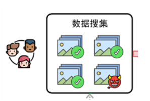
-
图中所示的后门防御属于 训练之后
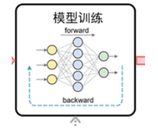
-
图中所示的后门防御属于 训练之中
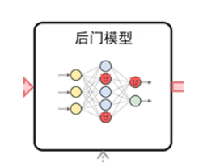
-
图中所示的后门防御属于 训练之前
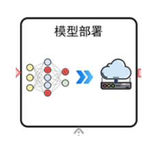
-
图中所示的属于 多目标类后门攻击
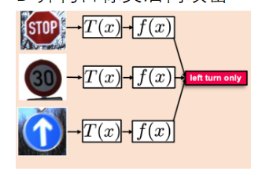
-
图中所示的属于 单一目标类后门攻击
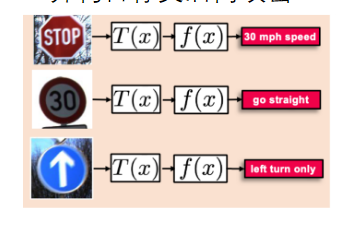
-
在训练阶段将所有中毒的训练样本标记为一个单一的目标类,在推理阶段期望所有中毒样本被预测为该目标类。属于 单一目标触发器
-
不同的触发器对应于于不同目标类而不管源类是什么属于 多目标触发器
-
使用相同的触发器,来自不同源类的样本将被预测为不同的目标类属于 多目标触发器
-
良性样本中的特定特征或图像中的特定词句的编码属于 语义触发器 触发器
-
随机噪声触发器或高亮像素点组合属于 非语义触发器 触发器
-
攻击者不仅可以接触和更改数据集,还可以控制训练过程属于 控制训练过程的后门攻击
-
攻击者只可以接触和更改训练数据集,不可以控制训练过程属于 基于数据投毒的后门攻击
-
图中的stage-3属于 半监督学习
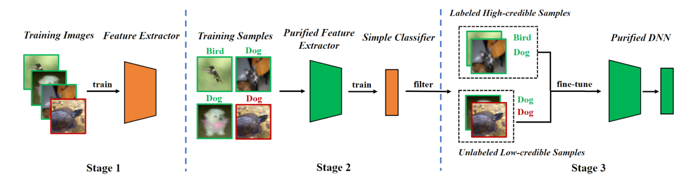
-
图中的stage-1属于 自监督学习

-
攻击者先训练一个大模型,然后用户进行模型压缩、模型轻量化或剪枝得到轻量级模型属于 部分控制攻击
-
攻击者在大规模数据集上预训练其模型,然后用户在小数据集上,针对不同的下游任务进行微调属于 部分控制攻击
-
一阶段训练中为了使这个训练过程稳定,在干净样本和中毒样本上更新的同时 搜集更新轨迹
-
在训练阶段将所有中毒的训练样本标记为一个单一的目标类,在推理阶段期望所有中毒样本被预测为该目标类是 单一目标触发器
-
与静态触发器相比,动态触发器到目标类形成稳定的映射可能更 困难,但会增加其隐蔽性
-
将图像从空间域变换到频域上常采用 离散余弦 变换
-
在DBD（基于训练过程解耦的后门防御）中,自监督训练,有毒样本 不能 聚在一起
-
在控制训练过程的后门攻击中,两阶段训练指的是两个任务 顺序执行
-
BadNets采用的是 静态触发器
-
下面属于非语义触发器的是 BadNets
-
BadNets添加方式的正确顺序是 ①②③。 ①选择一定比例的良性训练样本作为待操作样本。 ②将给定的触发器标记在待操作样本中,将这些样本的标签从真实标签更改成目标标签。 ③使用更改后的中毒训练集对模型进行训练
-
经过离散余弦变换（DCT）变换后的图像左上角是 低频 ,右下角是 高频
-
在自监督训练中,有毒样本 不能 聚在一起
-
假设恶意模型训练器生成的模型通过压缩后展开,并通过了模型测试的后门检测环节,则称该攻击为 成功 的
-
在 一阶段 训练攻击的最终后门模型中，触发器与模型参数的耦合更加紧密
-
根据训练过程是否完全由攻击者完成,可以将后门攻击分为 完全控制攻击 和 部分控制攻击
-
与两阶段训练攻击相比,在一阶段训练攻击的最终后门模型中,触发器与模型参数的耦合更加 紧密
-
在控制训练过程的后门攻击中，一阶段训练指的是两个任务 联合进行
-
根据对目标标签的修改情况，可以将数据投毒分为 单一目标触发器 和 多目标触发器
-
根据后门触发器是否是可变化的,可以将触发器分为 静态触发器 和 动态触发器
-
TUAP:是一种特定于类的通用对抗性扰动。与特定于特定输入的其他类型的对抗性扰动不同,TUAP会使模型错误分类到 目标类别 上,这意味着它们可以应用于任何输入图像中
-
对抗性后门与传统触发器的区别:1. 对抗噪声 是肉眼不可见的噪声;2. 模型训练过程与原始保持一致,无需更改
-
数字隐写:是利用各类数字媒体本身所具有的数据冗余,以及人类感知器官的生理、心理特性,将秘密消息以一定的编码或加密方式嵌入到公开的数字媒体中,对载有秘密消息的数字媒体进行传输,以达到 隐蔽通信 目的的信息隐藏技术
-
以添加的触发器是否被人类肉眼可见为分类依据可以分为 可见触发器，不可见触发器
-
后门防御手段可以存在在模型实现的各个阶段,例如在训练前对 训练数据 进行后门检测、训练过程中对异常激活神经元进行检测、训练后对得到的模型进行后门检测等
-
后门攻击的目的是获得一个 后门模型,当输入良性测试集中的样本,模型表现正常;当输入是中毒测试集中的样本,模型输出为 目标标签
第五章- AI伦理技术
- 将AI可解释技术分类，其中网络层作用，独立单元作用，表征向量属于AI 表征 可解释性
- 将AI可解释技术分类，其中线性代理模型，决策树，自动规则提取，显著图属于AI 过程 可解释性
- 差分隐私 的核心是通过在数据库中添加噪声，使查询结果变成了一个随机变量。使得模型不会学习到具体某一个数据提供的梯度
- 模型窃取训练过程：1.构建具有代表性的数据集作为训练集，输入目标黑盒模型，2.利用 黑盒模型的输出 作为标签，基于知识蒸馏的思想去训练本地替代模型
- 模型的“正向”过程就是通过输入得到一个输出，而“反演”则是通过模型的输出，反推训练集中某条目标数据的部分或全部属性值
- 面向数据隐私的保护方式有对 成员推断攻击 的数据隐私保护方法，对 模型反演攻击 的数据隐私保护方法
- 面向数据隐私的攻击方式有 成员推断攻击 和 模型反演攻击
- 利用数据生成方法，生成一个属性公平的数据集，典型方法为 FairGAN
- 审查调整数据集典型应用为 REVISE
- 在处理中实现公平AI算法的方式有 增加公平性限制项 ，对抗训练，领域独立训练
- 在预处理阶段实现公平AI算法的方式有 平衡数据集，审查调整数据集，合成公平数据集，合成成对公平数据集
- 图中表示 可解释性越好的模型，效果越差
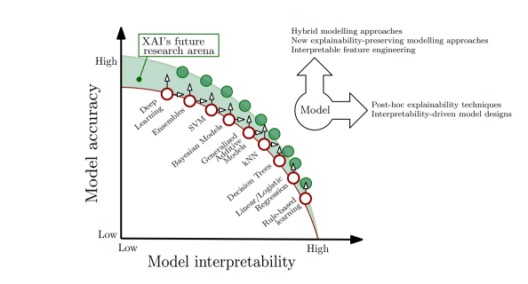
- 图中所示的网络结构的名称是 Transformer
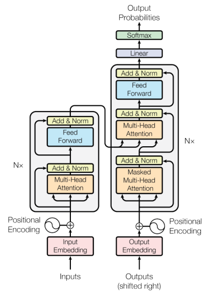
- 尽管控制注意力的单元没有训练来创建人类可读的解释，但它们确实直接揭示了 信息通过网络的路径 ，这可以作为一种解释形式
- 深层视觉表征的量化解释(network dissection):通过评估 各个隐藏单元和视觉语义概念 (对象、部分、纹理和颜色)之间的对齐来量化 CNN 表示的可解释性
- 网络层的信息可以进一步细分为单个 神经元 或单个 卷积滤波器
- Grad-CAM通过 计算梯度 来高效的生成显著图
- Visualizing and understanding convolutional networks通过 遮挡部分输入 来重复测试网络，显示数据的哪些部分实际上对网络输出有影响
- CRED（Continuous Rule Extractor via Decision tree induction）利用决策树对 神经网络进行分解 ，并将从每棵树中提取的规则进行合并，得到生成规则。该算法不依赖于网络结构，只提取数据中输入和输出变量之间的关系，同时适用于连续和离散的问题
- 线性代理模型功能是对于一个分类器（复杂模型），想用一个 可解释的模型（简单模型如线性规划），搭配可解释的特征进行适配，并且这个可解释模型在局部的表现上很接近复杂模型的效果
- 可解释人工智能：要么是指人类可以保留智力监督的人工智能系统，要么是指实现这一目标的方法。主要焦点通常是 人工智能做出的决策或预测背后的推理 ，这些决策或预测更容易理解和透明
- 透明和可解释性：对AI系统的决策过程提供 可解释性 和 追溯性 ，使其决策过程能被监督、评估和负责
- 面临的安全和隐私问题：数据投毒、 模型投毒 、后门攻击、 成员推理攻击 等
- 联邦机器学习的主要作用是可以避免 非授权的数据扩散 和解决 数据孤岛 问题
- 联邦学习 是一个机器学习框架，能有效帮助多个机构在满足用户隐私保护、数据安全和政府法规的要求下，进行数据使用和机器学习建模
- 数字水印嵌入是选择几层神经网络作为嵌入水印的网络层，然后将水印提取的损失，加入到原来的神经网络的 损失函数 中。这样就可以在神经网络训练时嵌入水印
- 一旦模型被窃取，需要有手段来证明这个模型的所有权，常用的保护方法是 数字水印
- 差分隐私的核心是通过 在数据库中添加噪声 ，使查询结果变成了一个随机变量。使得模型不会学习到具体某一个数据提供的梯度
- 差分隐私(DP-SGD )是对 模型反演攻击 的数据隐私保护方法
- 在模型已经训练好时，防御成员推断攻击，并使得原始模型 输出的可用性不下降
- MemGuard是 对成员推断攻击 的数据隐私保护方法
- 模型窃取训练过程：1.构建具有代表性的数据集作为训练集，输入 目标黑盒模型 ，2.利用黑盒模型的输出作为标签，基于知识蒸馏的思想去训练本地替代模型
- 在模型窃取攻击中，在本地训练一个与目标模型任务相同的替代模型，当经过大量训练之后，该模型就具有了和目标模型相近的性质，其目的在 利用替代模型拟合目标模型的功能
- 在黑盒模型反演攻击中，根据黑盒模型中输出的 置信度向量 或 标签信息 ，训练出逆向模型，输出重构的样本
- 在白盒模型反演攻击中，可以其作为一个优化问题，优化目标为：使逆向数据的输出向量与目标数据的输出向量差异尽可能地小，假如攻击者获得了属于某一类别的输出向量，那么可以利用 梯度下降 的方法，使逆向的数据经过目标模型的推断后仍然能得到同样的输出向量
- 攻击者只能访问目标模型，得到输出向量，不知道模型的结构、参数、数据集是 黑盒 模型反演攻击
- 模型的“正向”过程就是通过输入得到一个输出，而“反演”则是通过模型的 输出 ，反推训练集中 某条目标数据的部分或全部属性值
- 成员推断攻击中，利用多个 影子模型 对训练集和测试集的结果来作为训练样本，使得攻击模型可以区分训练集和测试集
- 成员推断攻击的基本流程正确的顺序是：② 攻击者将一个目标样本输入到目标模型中，并获得相应的预测结果；③ 将样本的标签、目标模型的预测结果输入到攻击模型里；① 攻击模型判断目标样本是否在目标模型的训练集中；
- 成员推断攻击的原理是 机器学习中的过拟合现象
- 在成员推断攻击中，攻击者的目的是判断某个目标输入样本是否存在于目标模型的训练数据集中。这是一种 黑盒 攻击，攻击者只能够访问模型，通过给定输入观察输出
- 攻击者非法获取到隐私模型的参数、结构、功能等敏感信息是 模型隐私
- 攻击者从模型的输出中推测出输入数据、训练数据集等敏感信息是 数据隐私
- 从攻击对象不同角度，AI隐私主要存在于两方面，一种是 数据隐私 ,另一种为 模型隐私
- 根据不同敏感属性，将数据划分为不同的域，每个域的数据使用单独的分类器进行预测，最后再将多个分类器结合起来使用是 领域独立训练
- 在通过对抗训练来排除敏感属性对分类结果的影响中特征提取器优化目标是 \(L_{target}=-(\sum_{i}(P(y_{i}|x_{i})-\alpha \log P(z_{i}|x_{i})))\)
- 在通过对抗训练来排除敏感属性对分类结果的影响中,属性判别器优化目标是 \(L_{protected}=-\sum_{i}\log(z_{i}|x_{i})\)
- 在构造数据集时，令一类中具有两种敏感属性的样本成对增加，始终保持其平衡性。属于 合成成对数据
- REVISE，是一种半自动化的数据集公平性审查工具。向其输入为含有标注的图片，REVISE 会根据数据集的语义分割和标注、标签信息，使用内置的 公平性指标（物体、性别、地域）进行计算，分析数据集中潜在偏见，提供可能的解决方案
- 标注图片中的敏感标签，在选取训练数据时，挑选出平衡数据，保证多样性。属于 平衡数据集
- 下面属于后处理的是 修改敏感属性
- 下面属于处理中的是 领域独立训练
- 下面属于预处理的是 平衡数据集
- 在模型的部署过程中，按照 预处理 ，处理中，后处理 三个方面，来实现公平AI算法
- 存在偏见的类型包括 数据偏见、算法偏见 、 用户行为偏见
- 随着 AI 的使用越来越广泛，AI 在 性别、种族 、年龄、性取向或政治或宗教取向等方面的表现存在着不同程度的偏见和歧视
第六章-攻击在AI伦理中的良性应用
- 跨模型通用噪声对抗deepfake文章的目标是什么？获得一个多图像通用的噪声，可以应对多种deepfake模型
- 噪声保护存在的问题之一是什么？每张图像都需要计算一个特定的噪声，导致计算资源消耗大
- 以下哪个案例属于被动防御？Google推出了名为“Assembler”的工具，用于帮助检测和分析deepfake视频
- 以下哪个案例属于主动防御？通过图像保护手段，禁止deepfake模型深度伪造过程
- 以下哪种防御策略是在侵权发生之后进行的？被动防御
- 关于决策边界唯一性的描述，哪项是正确的？在特定的训练数据集、特征表示、训练策略和随机初始化参数条件下，一个给定的机器学习模型将学习到唯一的决策边界
- 通用对抗扰动的特点是什么？能够被添加到多个不同输入样本上，使得这些样本都被误分类，是相对于整个数据集或者某个广泛的类别而言的，而不是针对某个特定的输入
- 普通对抗扰动的特点是什么？指针对单个特定输入样本生成的扰动，使得该样本被误分类，是相对于特定输入数据的，对其他输入可能不具有欺骗性
- 在指纹相似度计算过程中，下列哪项描述了该步骤的实施策略？使用对比学习训练一个编码器，将指纹映射成潜在空间中的编码，通过计算编码余弦相似度，来衡量指纹相似程度
- 常见的对抗攻击有：对抗样本，对抗水印，对抗贴纸，对抗噪声
- deepfake技术包括重现，编辑，替换，合成
- 模型通用噪声对抗deepfake目标是1. 获得一个多图像通用的噪声 2. 通用噪声可以应对多种deepfake模型
- 主动防御通常使用在侵权发生 前
- 被动防御通常使用在侵权发生 后
- 图中红框内步骤的目的是 设计假设检验流程，对可疑模型进行检测
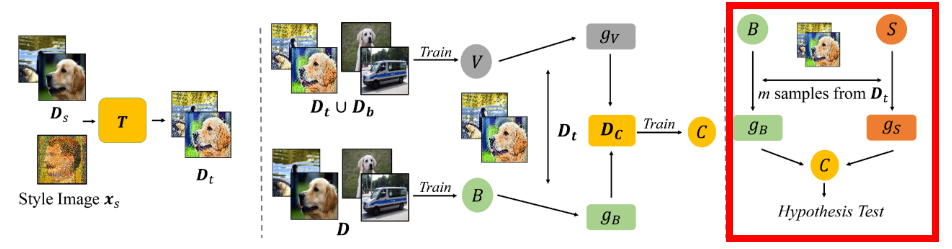
- 下图中Dt表示的是 中毒子集

- 下图中T表示的是 风格转换器
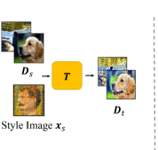
- 图中红框内步骤的目的是 训练分类器，对模型进行识别，输出识别结果
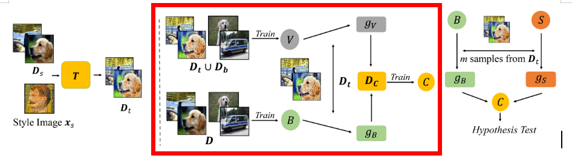
- 图中红框内步骤的目的是 引入外部特征 构建用于数据投毒的训练集
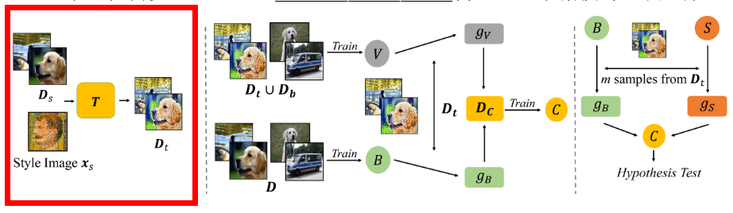
- 采用不改变数据标签的数据投毒的方式，将不属于训练集中的外部特征嵌入隐私模型中，通过分析模型面对外部特征时的输出表现，用假设检验的方式判断可疑模型是否为盗版模型。其中外部特征保证了 识别能力不易丢失
- 采用不改变数据标签的数据投毒的方式，将不属于训练集中的外部特征嵌入隐私模型中，通过分析模型面对外部特征时的输出表现，用假设检验的方式判断可疑模型是否为盗版模型。其中不改变数据标签 不创建显式后门，防止后门漏洞被利用
- 采用不改变数据标签的数据投毒的方式，将不属于训练集中的外部特征嵌入隐私模型中，通过分析模型面对外部特征时的输出表现，用假设检验的方式判断可疑模型是否为盗版模型。其中数据投毒 不会显著降低模型性能
- 传统的水印存在 降低性能 、易丢失 和 有安全隐患 这几点问题
- 图中的 f_pir表示 隐私模型及隐私模型衍生出的盗版模型
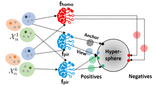
- 图中的f_homo表示同类任务的 分类模型

- 计算指纹相似分数，使用对比学习训练一个编码器，编码器将指纹映射成潜在空间中的编码，通过计算编码 余弦相似度 ，来衡量指纹相似程度
- 下图所示的公式目的是：训练一个模型，输入隐私模型和可疑模型的指纹对，输出 指纹相似度分数
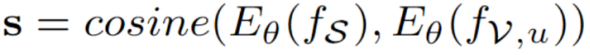
- 用公式表示指纹生成这一过程:其中x表示 选取的数据点

- 用公式表示指纹生成这一过程:其中f表示 模型
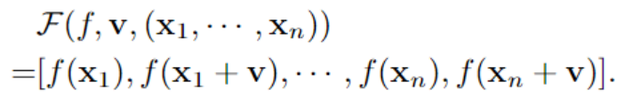
- 用公式表示指纹生成这一过程:其中v表示 扰动

- 指纹生成的正确顺序是 ③计算隐私模型的UAP:参考经典通用扰动计算方法，叠加梯度②选取数据点：测试所有数据是不现实的，需要合理采样最能代表所有数据点的子集① 针对隐私模型和可疑模型，分别输入测试子集，得到两个模型指纹
- 在如图所示的指纹生成流程中，输入应该是 计算隐私模型的UAP， 采样数据点
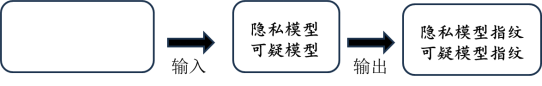
- 如果可疑模型是盗版模型，则由隐私模型生成的 UAP 可以在所有数据点上欺骗可疑模型
- 根据DNN 模型的 决策边界的轮廓 可以通过其通用对抗性扰动唯一地表示。因此通用对抗扰动可以作为模型的一种指纹信息，隐私模型和盗版模型的通用对抗扰动相似性很高，利用这个现象可以用来进行模型鉴别
- DNN 模型的决策边界的轮廓可以通过其通用 对抗性扰动 唯一地表示
- 在特定的训练数据集、特征表示、训练策略和随机初始化参数条件下，一个给定的机器学习模型将学习到 唯一的决策边界 。并且，研究发现，DNN决策边界与模型通用对抗扰动有很强的联系
- 通用 能够被添加到多个不同输入样本上，使得这些样本都被误分类。它是相对于整个数据集或者某个广泛的类别而言的，而不是针对某个特定的输入
- 普通 对抗扰动是指针对单个特定输入样本生成的扰动，使得该样本被误分类。它是相对于特定输入数据的，对其他输入可能不具有欺骗性
- 通过更改模型训练数据、训练策略或模型结构，向模型中人为植入可辨认的水印信息。以此水印信息为指纹区分深度学习模型叫做 模型水印
- 模型水印：通过更改模型训练数据、训练策略或模型结构，向模型中 人为植入 可辨认的水印信息。以此水印信息为指纹区分深度学习模型
- 不改变模型原有训练数据、训练策略和模型结构，从模型本身具有的特异性特征入手，以此为指纹区分深度学习模型叫做 模型指纹
- 模型指纹：不改变模型原有训练数据、训练策略和模型结构，从模型 本身具有 的特异性特征入手，以此为指纹区分深度学习模型
- 模型窃取攻击指的是针对目标模型，复制一个 功能相似 ，性能相近 的盗版模型
- 数字水印的隐蔽性指的是：水印应不易被肉眼察觉
- 数字水印的可辨性指的是：使用水印数据集训练的模型，在特定情况下应有不同于其他模型的预测行为
- 数字水印的无害性指的是：水印不应阻止数据集的正常使用
- 通过添加 噪声扰动 ，使受保护的图像在风格空间与风格迁移图像相似，而在输入空间（视觉上）与原始图像相似
- 风格特征在图像中的表现形式十分多样化，直接的识别和分离特定的风格特征很难，因此本工作的主要难点集中在 如何有效的隔离风格特征 上
- 现有的图像保护方法，通常会对图像中的所有特征进行保护，耗费大量时间和计算资源。针对艺术图像，最有价值的特征是风格特征，因此，对图像的保护将集中在 风格特征 上
- 侵权行为的预防要做到 有效性 :经保护的数据集不被扩散模型学习；隐蔽性 :保护措施不影响艺术图像的观赏
- 在侵权行为的预防中未经保护的数据集会生成目标风格的作品，对抗性数据集 会生成错误风格的作品
- 侵权行为的验证主要是检验商业模型是否使用 未授权数据
- 侵权行为的预防主要阻止 未授权数据 被使用
- 数据集版权保护的两种场景包括侵权行为的 预防 和侵权行为的 验证
- 图中所示的模型窃取的手段是 知识蒸馏
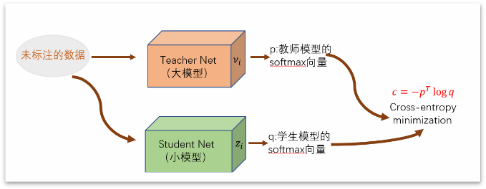
- 模型窃取的目标是 低代价，高收益，低风险
- 模型窃取：指未经授权获取、使用或复制他人机器学习模型的行为。可能包括 未经授权的复制，逆向工程，非法访问 等行为